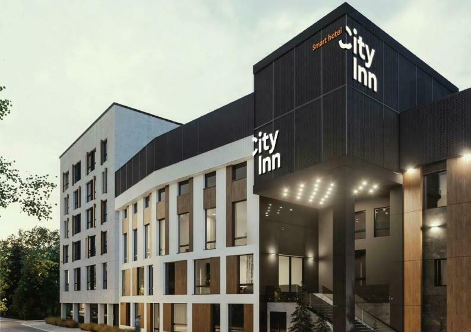
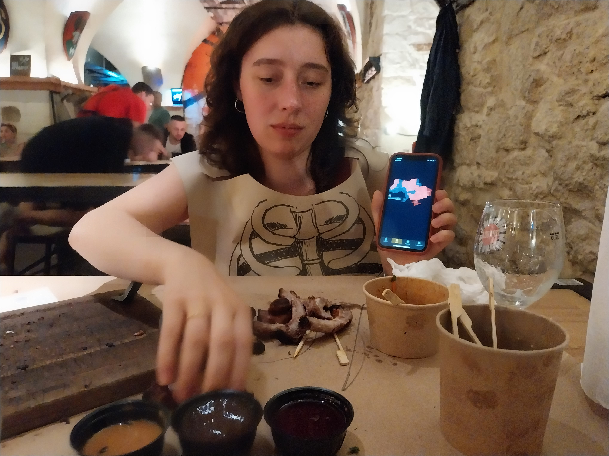
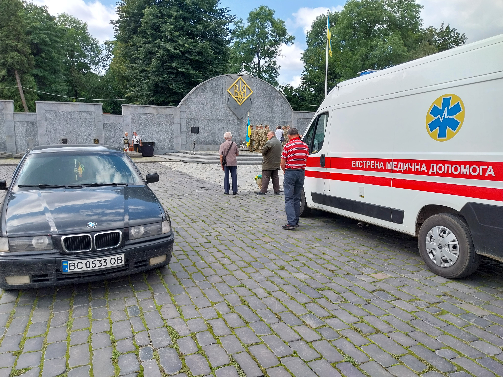
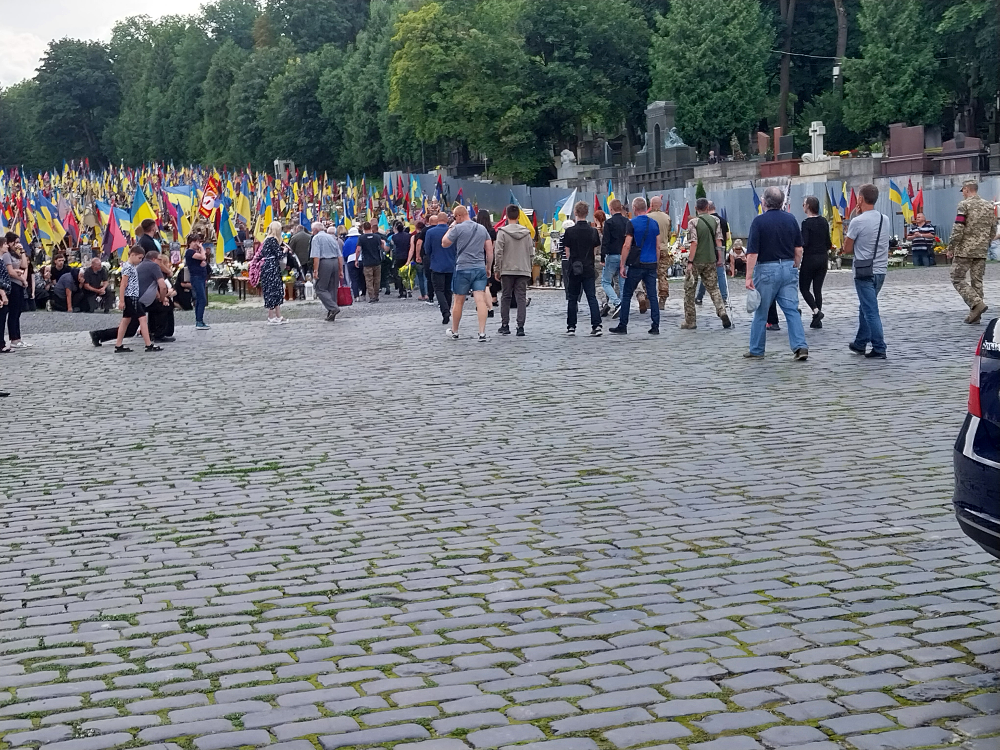

Lviv
Superhumans
L'hotel ou je me rendais n'étais pas en centre-ville car il se situe près d'un centre médical nommé Superhumans, avec lequel ma compagne Antonina organise une collaboration au nom du ministère de la santé. Elle s'y est rendus pour accompagner pendant une semaine des chirurgiens et prothesistes français. L'hotel est un grand batiment, qui domine les maisons et petits immeubles présents autours. Il est très moderne, et tout y est écris en anglais. Un restaurant très classe partage le même batiment.

L'hotel en question.

Vue de l'hotel.
Le lendemain de mon arrivé, la réception de cloture du voyage à lieu dans ce restaurant. Je rencontre les médecins, les français sont très sympathiques, la communication est un peu plus compliquée avec les ukrainiens. Le directeur médical du centre Superhumans est un grand type assez maigre, qui parle très bien anglais. Il porte sous sa veste de costume un t-shirt avec un renaud master imprimé. Je l'interroge, et il m'explique que c'est son fils qui lui a commandé car il conduisait ce camion pour acheminer des fournitures humanitaires et militaires dans la région de Kherson. Il me montre de photo d'une fois ou ils ont du rebrousser chemin car la route était minée. Je ne peux m'empecher de mentionner que j'ai conduit le même véhicule pour un démanagement 10 jours avant mon départ. C'est un très bon camion, et j'avais été assez stressé par la conduite d'un si gros véhicule dans les rues étroites mais dénuée de mines de Paris.
Le tourisme
Une fois les médecins français rentrés en France, nous changeons d'hotel pour se rapprocher du centre ville, qui a très peu changé depuis notre visite de 2021. On retrouve les même restaurants, la même ambiance de grande zone dédiée au tourisme, un grand nombres de magazins de souvenir. Les souvenirs ont changés, beaucoups sont des réferences à la guerres. Chaque boutique affiche son drapeau, et elles sont nombreuses à avoir une urne pour collecter des dons pour les forces armées.

Les églises affichent aussi leur soutien à l'armée.

L'arsenal de Lviv. Il y a un musée à l'étage, et un grand restaurant au sous-sol.

Ci-dessus, on peut voir la carte de l'alerte aérienne en cours. Nous ne sommes pas inquiets car le restaurant est au sous-sol de l'arsenal, et les murs sont épais.
L'enterrement d'un soldat
La mère d'Antonina lui avait dit qu'un membre de la famille est enterré dans le grand cimetiere de la ville. C'est une sorte de petit Père-Lachaise, il y a beaucoup d'arbres et de grandes tombes. Il faut prendre un ticket pour entrer, et c'est une visite que l'on avait déjà faite en 2021.

On y retourne pour voir essayer de trouver la tombe de l'ancêtre, et voir ce qui a changé. En arrivant on choisi de visiter en premier l'extension reservée aux morts de la guerre. C'est à l'exterieur de l'enceinte du vieux cimetiere. Il y a en premier lieu une sorte d'estrade en béton accolé au mur gris. Au dessus de celle-ci est suspendu un grand trident ukranien doré, et il y a un mât avec un drapeau juste à coté. Autour de l'estrade, le sol est pavé. Plus loin il y a un pré, qui monte légérement, et dans lequel les tombes sont creusées. Une allée centrale recouverte de gravier divise les rangs de six tombes. Les tombes sont en bois, elles montent à hauteur de genous, et n'ont pas de couvercle; elles sont remplies de terres et recouvertes de fleurs. Il y a une croix au bout, avec une photo accrochée. Derriere la croix se trouve une grande couronne de fleurs, et sur ses flancs plusieurs drapeaux, qui d'en bas forment une forêt. Des petits bancs sont placés entre les tombes, et servent à beaucoup de familles qui sont venues entrenir la tombe et se recueillir, à l'occasion du week-end.

Lorsque nous allions partir, plusieurs voitures et un bus arrivent, pour enterrer un soldat. Six soldats portent le cercueil sur l'estrade, un drapeau est deplié sur celui-ci, et un pretre chante une longue prière. Lorsqu'elle est finie, d'autres soldats tirent trois coups de leurs fusils.

Le drapeau est replié et le cercueil est récuperé par les six hommes qui le portent le long de l'allée centrale. La famille du mort suit le cercueil, et sur son chemin, de nombreuses personnes mettent un genou à terre. Une fois le cercueil trop haut pour qu'on le voit, nous partons pour rentrer dans le vieux cimetière. On ne parviendra pas à trouver la tombe que l'on cherchait.
